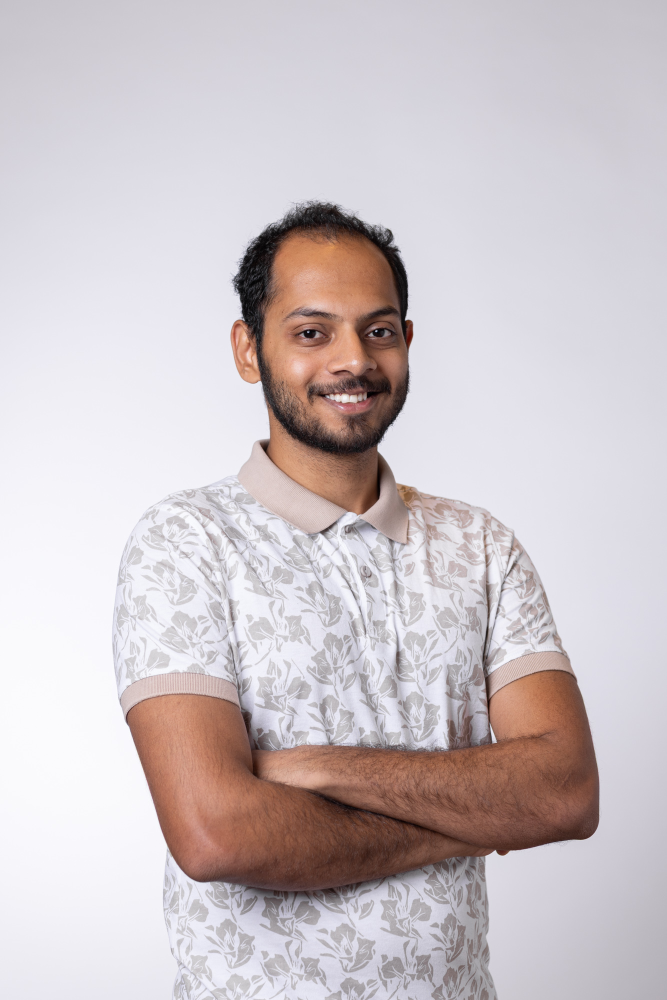

ವರುಣ್ ಘಟ್ ರವಿಕುಮಾರ್
Varun Ghat Ravikumar
AI ML Engineer with a passion for NLP, Computer Vision, and Data Science.
Short CV
- 2026: Software Engineer, ISLE, University of Zurich (etymological datasets under Chundra Cathcart)
- 2026: Software Engineer, LiRI UZH (under EVOPHON project with Steven Moran)
- 2026: Software Developer, ISLE, University of Zurich (wordlist digitization under John Mansfield)
- 2024: Research Assistant, DDIS group, University of Zurich
- 2023 – 2026: M.Sc. Informatics (AI), University of Zurich
- 2023: Associate Data Scientist & Intern, Amagi Media Labs
- 2022 – 2023: Internship, Kernel Insights
- 2021 – 2022: Internship, Indian Institute of Astrophysics
- 2017 – 2021: B.E. Computer Science & Engineering, JSS Science & Technology University, Mysuru
Details on the Work page →
Publications & Talks
-
Gave an oral presentation at CLiC-it in Palermo, Italy, on my paper "A Factorial Study of Synthetic Data Generation for Low-Resource Machine Translation using Grammar Books".
-
A Factorial Study of Synthetic Data Generation for Low-Resource Machine Translation using Grammar Books
V. G. Ravikumar, S. Ahmadi, L. Jäger, R. Sennrich
Accepted to the Italian Conference on Computational Linguistics (CLiC-it) 2026.
[DOI: 10.48550/arXiv.2607.22376]
-
Alan's Speakeasy - An Ecosystem for the Evaluation of Conversational Agents
L. Rossetto, C. Sarasua, O. Inel, V. G. Ravikumar, et al.
Proceedings of the ACM Web Conference 2025 (WWW '25), Companion Volume.
[DOI: 10.1145/3701716.3715165]
Showcase
-
Low-Resource Language Translation using Synthetic Data from Grammar Books [GitHub]
Master's Thesis: 190k+ synthetic translation pairs from grammar books, 96 fine-tuning setups.
-
AI Data Analysis Dashboard [GitHub]
Natural-language analytics chatbot for Caritas (Hack4Good).
-
VLM-based Inventory Manager [GitHub]
Turning images of household objects into a searchable database.
See all projects →